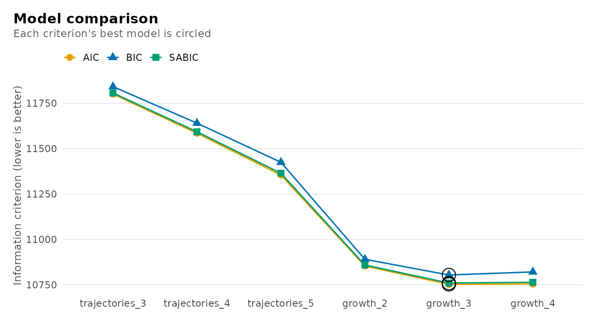
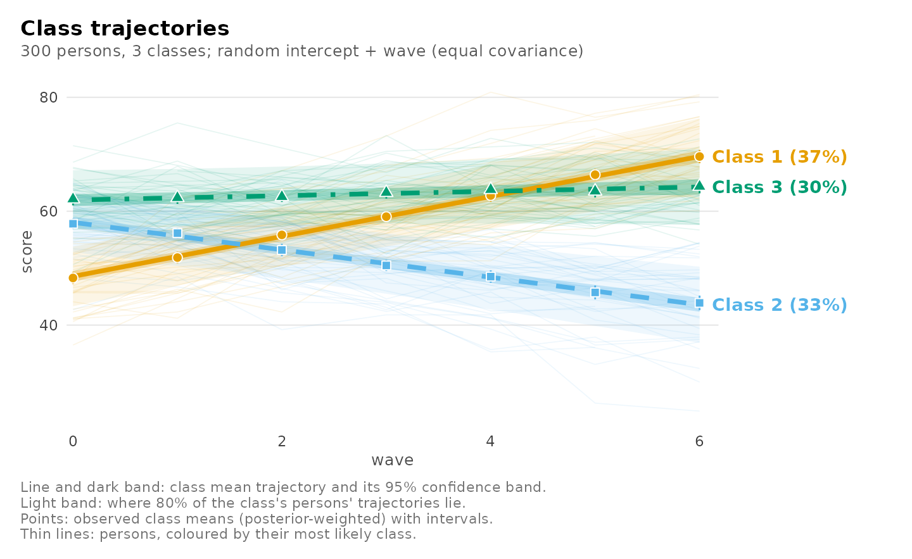
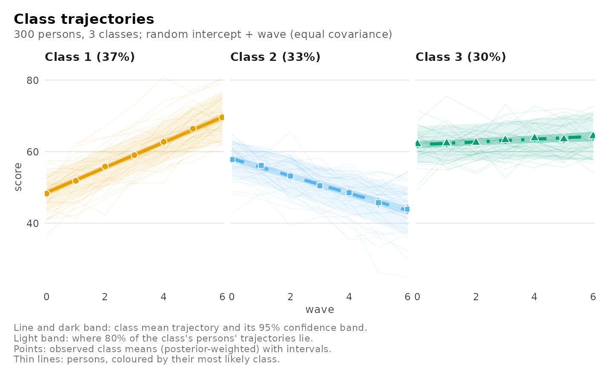
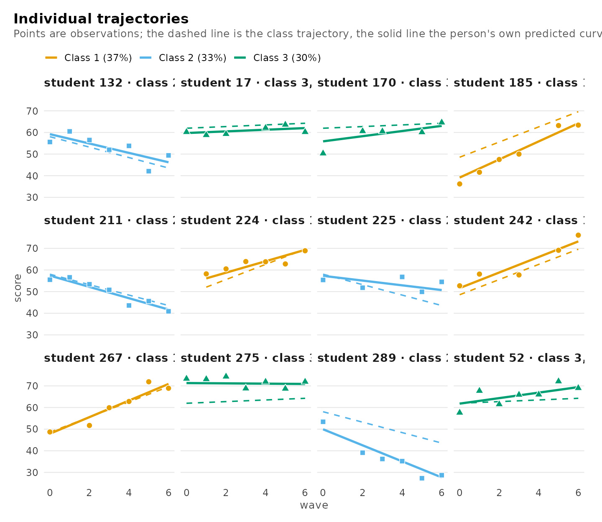
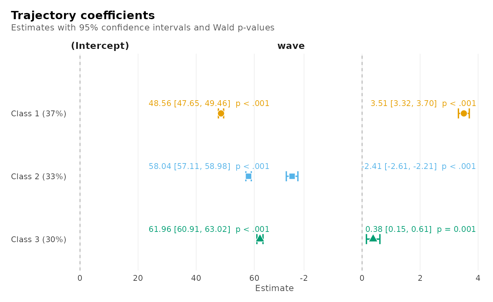
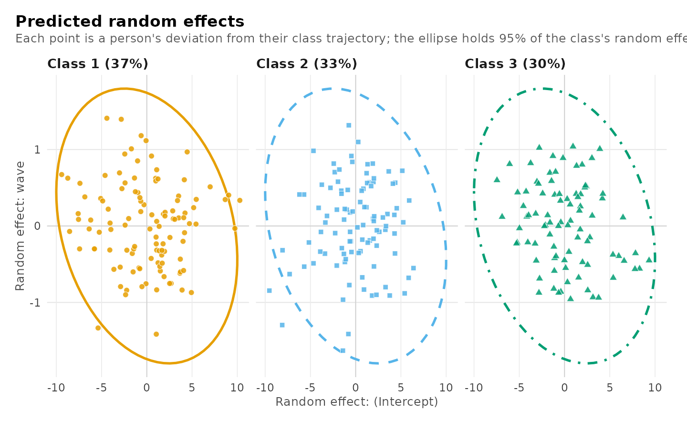
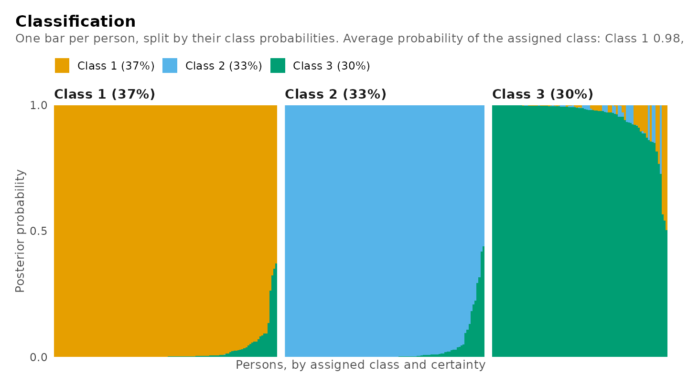
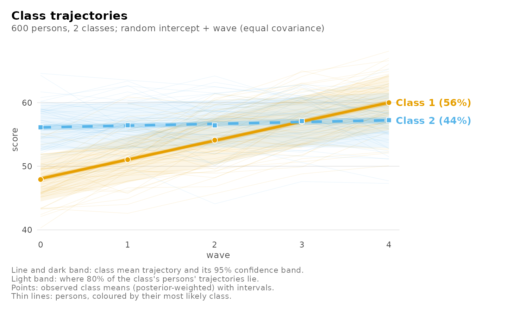
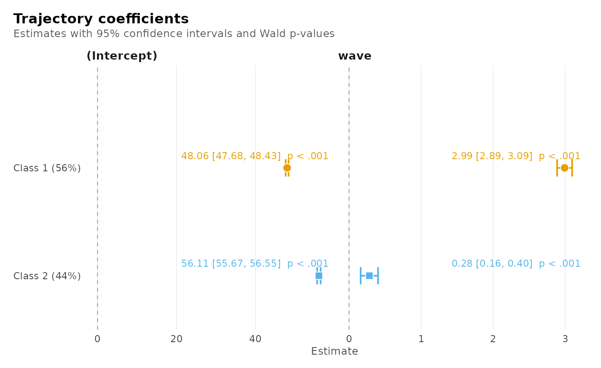
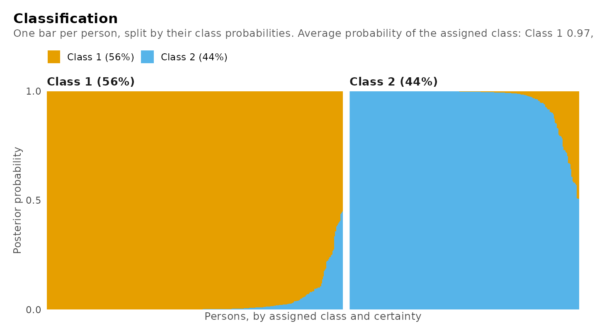

Growth mixture models: classes of trajectories
Written by Mohammed Saqr and Sonsoles López-Pernas
Source:vignettes/articles/growth-mixture.Rmd
growth-mixture.RmdWhen the same people are measured repeatedly, a single average trajectory often hides several kinds of change: some improve, some hold steady, some decline. A growth model with classes finds those kinds from the data. This vignette is about the growth mixture model, which lets people vary around their class trajectory, and its multilevel form for people nested in clusters; it compares it with latent class growth analysis, the model without that variation, which has its own article, Latent class growth analysis (including pass/fail, count and ordered outcomes).
Two models
- Latent class growth analysis (Nagin 2005) gives every class its own trajectory. Everyone in a class follows that trajectory exactly; anything else is noise.
-
The growth mixture model (Verbeke and Lesaffre
1996; Muthén and Shedden
- also lets people vary around their class trajectory: each has their own start and rate of change (random intercepts and slopes).
The difference matters. When people vary within their kind, the first model can only express that variation by adding classes, so it tends to find more classes than there are (Bauer and Curran 2003). The second model separates kinds of change from individual variation.
Both are one call. Persons are the classified units, so
id names them and class_level = "group" keeps
all of a person’s measurements in one class; random adds
the random effects.
| Role | Argument | Here |
|---|---|---|
| Outcome, measured repeatedly | left of ~
|
score |
| Time | right of ~
|
wave |
| Person |
id, with class_level = "group"
|
student |
| Variation around the class trajectory | random |
"wave": own start and own slope |
| What predicts the class | membership |
"motivation" |
The data
growth_scores is simulated so the answer is known: 300
students tested on up to seven waves, of three kinds (improving, stable,
declining), each student varying around their kind’s trajectory, with
motivation predicting the kind. About 12% of tests were missed, which
these models handle without imputation.
How many classes, and which model?
Fit both models for a range of classes and compare them in one table.
random_covariance = "equal" gives every class the same
random-effect spread, the usual first choice.
trajectories <- function(k) {
mixture_regression(score ~ wave, growth_scores, n_classes = k,
id = "student", class_level = "group",
n_starts = 5, seed = 1)
}
growth <- function(k) {
mixture_regression(score ~ wave, growth_scores, n_classes = k,
id = "student", class_level = "group", random = "wave",
random_covariance = "equal", n_starts = 5, seed = 1)
}
comparison <- compare_models(
trajectories_3 = trajectories(3), trajectories_4 = trajectories(4),
trajectories_5 = trajectories(5),
growth_2 = growth(2), growth_3 = growth(3), growth_4 = growth(4))
comparison
#> Model comparison
#>
#> Model Classes Random k LogLik BIC ΔBIC Weight Entropy
#> -------------- ------- ---------------- -- -------- -------- ------- ------ -------
#> trajectories_3 3 none 11 -5889.55 11841.85 1038.25 0.000 0.92
#> trajectories_4 4 none 15 -5777.54 11640.63 837.04 0.000 0.94
#> trajectories_5 5 none 19 -5658.21 11424.79 621.20 0.000 0.94
#> growth_2 2 intercept + wave 10 -5416.53 10890.11 86.51 0.000 0.92
#> growth_3 3 intercept + wave 14 -5361.87 10803.59 0.00 1.000 0.90 <- best
#> growth_4 4 intercept + wave 18 -5358.94 10820.56 16.96 0.000 0.81The growth mixture model with three classes is preferred, with nearly all the BIC weight. The trajectory model without random effects keeps improving as classes are added: five classes are still better than four, though only three kinds of student exist. That is the over-extraction described above.
plot(comparison)
For a test rather than a criterion,
enumerate_regressions() fits a range of classes and, with
bootstrap, adds the bootstrap likelihood-ratio test of each
number of classes against one fewer (McLachlan 1987; Nylund, Asparouhov
and Muthén 2007). It refits both models on data simulated from the
smaller one, so it takes minutes; on these data it rejects two classes
in favour of three and keeps three against four.
enumerate_regressions(score ~ wave, growth_scores, n_classes = 1:4,
id = "student", class_level = "group", random = "wave",
random_covariance = "equal", bootstrap = 99, seed = 1)The chosen model
Refit it with motivation predicting the class:
fit <- mixture_regression(score ~ wave, growth_scores, n_classes = 3,
id = "student", class_level = "group",
random = "wave", random_covariance = "equal",
membership = "motivation", n_starts = 5, seed = 1)
fit
#> Growth mixture model
#> 3 classes, 300 persons, 1844 observations
#> Random intercept + wave, covariance shared across classes; residual variance by class
#> Log likelihood -5315.44, BIC 10722.14, entropy 0.92, converged
#>
#> Classes
#>
#> Class Share 95% CI Persons Avg. posterior Residual SD
#> ------- ----- ------------ ------- -------------- -----------
#> Class 1 0.37 [0.33, 0.43] 112 0.98 2.75
#> Class 2 0.33 [0.28, 0.38] 100 0.97 2.95
#> Class 3 0.30 [0.24, 0.36] 88 0.95 2.78
#>
#> Trajectory coefficients (95% CI)
#>
#> Class Term Estimate 95% CI p
#> ------- --------- -------- -------------- -----
#> Class 1 Intercept 48.56 [47.65, 49.46] <.001
#> Class 1 wave 3.51 [ 3.32, 3.70] <.001
#> Class 2 Intercept 58.04 [57.11, 58.98] <.001
#> Class 2 wave -2.41 [-2.61, -2.21] <.001
#> Class 3 Intercept 61.96 [60.91, 63.02] <.001
#> Class 3 wave 0.38 [ 0.15, 0.61] .001
#>
#> More: get_results(x, "random"), plot(x), summary(x)Every table is a data frame from get_results(); printing
shows the columns people report, while the data frame keeps every column
(standard errors, statistics, exact p-values and bounds).
get_results(fit, "random")
#> Random effects (95% CI)
#>
#> Class Parameter Term Estimate 95% CI
#> ----------- ----------- ---------------- -------- --------------
#> All classes Variance Intercept 16.70 [13.39, 20.83]
#> All classes Variance wave 0.54 [ 0.40, 0.73]
#> All classes SD Intercept 4.09 [ 3.66, 4.56]
#> All classes SD wave 0.73 [ 0.63, 0.85]
#> All classes Correlation Intercept x wave -0.25 [-0.40, -0.08]
get_results(fit, "membership")
#> Class membership (log odds against Class 1, 95% CI)
#>
#> Class Term Estimate 95% CI p
#> ------- ---------- -------- ---------------- -----
#> Class 2 Intercept -0.177 [-0.535, 0.180] .331
#> Class 2 motivation -1.758 [-2.210, -1.307] <.001
#> Class 3 Intercept 0.020 [-0.316, 0.356] .907
#> Class 3 motivation -0.809 [-1.189, -0.429] <.001Students start about 4 points apart and change at rates about 0.7 points per wave apart within each class; those who start higher tend to grow a little more slowly (a correlation of about -0.25). More motivated students are less likely to be in the declining class (class 2) or the stable class (class 3) than in the improving class.
Because the data were simulated, the classes can be checked against the truth:
get_results(fit, "recovery", data = growth_scores, truth = "trajectory")
#> Recovery of a known classification
#>
#> Assigned trajectory Persons Share of assigned
#> -------- ---------- ------- -----------------
#> Class 1 improving 110 0.982
#> Class 2 improving 0 0.000
#> Class 3 improving 5 0.057
#> Class 1 stable 2 0.018
#> Class 2 stable 3 0.030
#> Class 3 stable 83 0.943
#> Class 1 declining 0 0.000
#> Class 2 declining 97 0.970
#> Class 3 declining 0 0.000Distal outcomes
Do the classes differ on something measured once per student?
three_step() compares class means with the bias-corrected
three-step method (Vermunt 2010; Bakk and Vermunt 2016), which accounts
for students being classified with error. The trajectory model must be
fitted without membership for this correction, so
motivation is treated here as a distal variable of the classes from the
model without it:
trajectory_classes <- mixture_regression(score ~ wave, growth_scores,
n_classes = 3, id = "student",
class_level = "group", random = "wave",
random_covariance = "equal",
n_starts = 5, seed = 1)
three_step(trajectory_classes, data = growth_scores, outcome = "motivation",
contrast = "pairs")
#> Distal outcome: class differences (bch, 95% CI)
#>
#> Class vs Difference 95% CI p p (BH)
#> ----- -- ---------- -------------- ----- ------
#> 2 1 -1.27 [-1.52, -1.03] <.001 <.001
#> 3 1 -0.60 [-0.85, -0.34] <.001 <.001
#> 3 2 0.68 [ 0.43, 0.93] <.001 <.001Seeing the classes
The trajectory view shows each class’s mean trajectory with its confidence band, a lighter band where 80% of that class’s students’ own trajectories lie, and the observed class means at every wave, which should sit on the curves.
plot(fit)
plot(fit, facet = TRUE)
Individual students, chosen across each class’s range of classification certainty: their observations, their class trajectory (dashed) and their own predicted trajectory (solid).
plot(fit, what = "individuals")
The coefficients with their intervals and p-values:
plot(fit, what = "coefficients")
Each student’s predicted deviation from their class trajectory, with the model’s 95% ellipse:
plot(fit, what = "random")
How confidently each student is classified, one bar per student:
plot(fit, what = "classification")
Students in schools
When the persons are nested in clusters – students in schools,
patients in clinics – the clusters may differ in which trajectories
their persons follow. The multilevel growth mixture model (Asparouhov
and Muthén 2008; Vermunt 2003) gives every cluster a group class, and
the group class shifts how probable each trajectory class is for its
persons. cluster names the clusters and
n_group_classes their number of classes;
group_membership names cluster-level covariates of the
group class. The growth_schools data have 600 students in
40 schools of two (simulated, hidden) types, in which most students
improve or few do, and a school support programme:
schools <- mixture_regression(score ~ wave, growth_schools, n_classes = 2,
id = "student", class_level = "group",
random = "wave", random_covariance = "equal",
cluster = "school", n_group_classes = 2,
group_membership = "programme",
n_starts = 4, seed = 1)
schools
#> Multilevel growth mixture model
#> 2 classes and 2 group classes; 40 clusters, 600 persons, 2780 observations
#> Random intercept + wave, covariance shared across classes; residual variance by class
#> Log likelihood -7019.85, BIC 14087.66, entropy 0.87, converged
#>
#> Classes
#>
#> Class Share 95% CI Persons Avg. posterior Residual SD
#> ------- ----- ------------ ------- -------------- -----------
#> Class 1 0.56 [0.48, 0.64] 338 0.97 2.01
#> Class 2 0.44 [0.36, 0.52] 262 0.96 2.07
#>
#> Group classes: trajectory classes within each
#>
#> Group class Class Probability SE Share of clusters Clusters
#> ------------- ------- ----------- ----- ----------------- --------
#> Group class 1 Class 1 0.851 0.024 0.528 21
#> Group class 1 Class 2 0.149 0.024 0.528 21
#> Group class 2 Class 1 0.245 0.029 0.472 19
#> Group class 2 Class 2 0.755 0.029 0.472 19
#>
#> Trajectory coefficients (95% CI)
#>
#> Class Term Estimate 95% CI p
#> ------- --------- -------- -------------- -----
#> Class 1 Intercept 48.06 [47.68, 48.43] <.001
#> Class 1 wave 2.99 [ 2.89, 3.09] <.001
#> Class 2 Intercept 56.11 [55.67, 56.55] <.001
#> Class 2 wave 0.28 [ 0.16, 0.40] <.001
#>
#> More: get_results(x, "random"), plot(x), summary(x)The schools are the independent units: the likelihood, the standard errors and the BIC count schools. The group classes’ composition, the schools’ classification and the membership logits (the programme makes a school less likely to be in the second group class):
The trajectory views read the same as for one level, and the classification view shows how confidently each student is classified:
plot(schools)
plot(schools, what = "coefficients")
plot(schools, what = "classification")
get_results(schools, "group_classes")
#> Group classes: trajectory classes within each
#>
#> Group class Class Probability SE Share of clusters Clusters
#> ------------- ------- ----------- ----- ----------------- --------
#> Group class 1 Class 1 0.851 0.024 0.528 21
#> Group class 1 Class 2 0.149 0.024 0.528 21
#> Group class 2 Class 1 0.245 0.029 0.472 19
#> Group class 2 Class 2 0.755 0.029 0.472 19
head(get_results(schools, "clusters"))
#> Cluster group classes
#>
#> school Persons Group class Probability
#> ------ ------- ------------- -----------
#> 1 15 Group class 2 1.00
#> 2 15 Group class 2 1.00
#> 3 15 Group class 2 1.00
#> 4 15 Group class 2 1.00
#> 5 15 Group class 1 1.00
#> 6 15 Group class 2 1.00
get_results(schools, "membership")
#> Class membership (log odds against Class 1, 95% CI)
#>
#> Class Term Estimate 95% CI p
#> ------------- ------------------------ -------- ---------------- -----
#> Group class 2 Intercept -0.099 [-0.917, 0.718] .812
#> Group class 2 programme -2.108 [-3.458, -0.758] .002
#> Class 2 Intercept, group class 1 -1.740 [-2.103, -1.377] <.001
#> Class 2 Intercept, group class 2 1.128 [ 0.817, 1.438] <.001The number of group classes is compared like the number of classes, from one (the single-level model with schools as the units) upward:
enumerate_regressions(score ~ wave, growth_schools, n_classes = 2,
n_group_classes = 1:3, id = "student",
class_level = "group", random = "wave",
random_covariance = "equal", cluster = "school",
n_starts = 3, seed = 1)
#> Mixture regression class enumeration
#>
#> n_classes n_group_classes log_likelihood n_parameters bic icl entropy smallest_share
#> 2 1 -7105 10 14246 14384 0.8345 0.4399
#> 2 2 -7029 12 14102 14212 0.8699 0.4360
#> 2 3 -7028 14 14109 14243 0.8707 0.4364
#> converged best_bic
#> TRUE FALSE
#> TRUE TRUE
#> TRUE FALSE
#>
#> One model: get_results(x, "model", n_classes = ).Choices and warnings
-
Random effects.
random = "intercept"lets students differ in level only;random = "wave"in level and rate of change. A formula such as~ 0 + wavegives a random slope without a random intercept. -
The random-effect spread.
"equal"shares it across classes;"varying"estimates one per class;"proportional"shares its shape and lets its size differ.random_diagonal = TRUEmakes the random effects uncorrelated. -
Curved trajectories. Use
score ~ wave + I(wave^2)orscore ~ splines::ns(wave, df = 3). -
A degenerate covariance. When the data cannot
support a random effect in some class (a variance at zero, or two random
effects perfectly correlated), the fit warns
(
latents_random_boundary), reports no interval for that covariance, and marks it as a boundary in the tables and plots. Simplify the random effects, or drop them.
How this was checked
The model’s likelihood equals an independently written dense-matrix
likelihood, and the analytic scores equal numerical derivatives; for the
multilevel model too, whose likelihood is checked against a dense sum
over group classes per school, which reduces to the single-level model
when the group classes coincide. Against lcmm::hlme()
(Proust-Lima, Philipps and Liquet 2017), on configurations with one to
three classes, shared, proportional and diagonal covariances and
membership covariates, the likelihoods agree at hlme’s own
estimates and mixture_regression() reaches at least
hlme’s maximum.
References
Asparouhov, T., & Muthén, B. (2008). Multilevel mixture models. In G. R. Hancock & K. M. Samuelsen (Eds.), Advances in latent variable mixture models (pp. 27–51). Information Age.
Bakk, Z., & Vermunt, J. K. (2016). Robustness of stepwise latent class modeling with continuous distal outcomes. Structural Equation Modeling, 23, 20–31.
Bauer, D. J., & Curran, P. J. (2003). Distributional assumptions of growth mixture models: Implications for overextraction of latent trajectory classes. Psychological Methods, 8, 338–363.
McLachlan, G. J. (1987). On bootstrapping the likelihood ratio test statistic for the number of components in a normal mixture. Applied Statistics, 36, 318–324.
Muthén, B., & Shedden, K. (1999). Finite mixture modeling with mixture outcomes using the EM algorithm. Biometrics, 55, 463–469.
Nagin, D. S. (2005). Group-based modeling of development. Harvard University Press.
Nylund, K. L., Asparouhov, T., & Muthén, B. O. (2007). Deciding on the number of classes in latent class analysis and growth mixture modeling: A Monte Carlo simulation study. Structural Equation Modeling, 14, 535–569.
Proust-Lima, C., Philipps, V., & Liquet, B. (2017). Estimation of extended mixed models using latent classes and latent processes: The R package lcmm. Journal of Statistical Software, 78(2), 1–56.
Vermunt, J. K. (2010). Latent class modeling with covariates: Two improved three-step approaches. Political Analysis, 18, 450–469.
Vermunt, J. K. (2003). Multilevel latent class models. Sociological Methodology, 33, 213–239.
Verbeke, G., & Lesaffre, E. (1996). A linear mixed-effects model with heterogeneity in the random-effects population. Journal of the American Statistical Association, 91, 217–221.